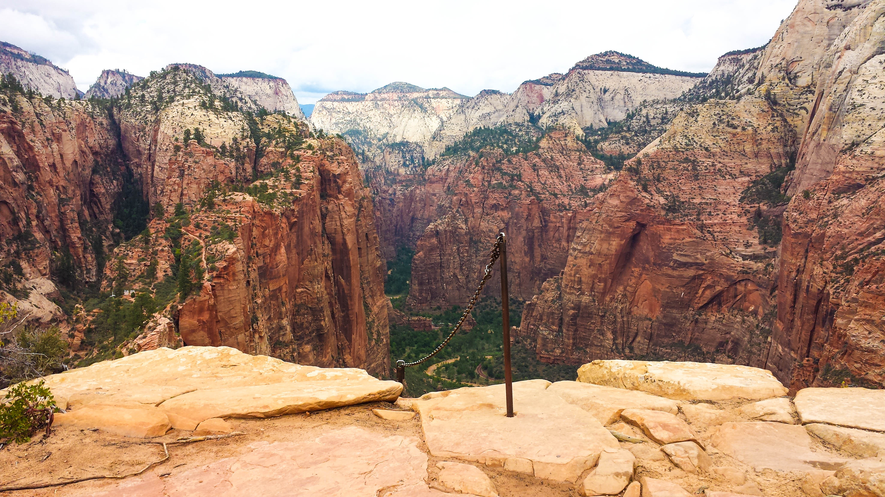

King's Peak - High Uintas, Utah
If you'd like some high mountain action with plenty of flat-ish trail time high up and big peak bragging rights, a go at King's peak is your ticket.
details:
30 miles round trip starting at about 9,500ft and mostly hanging between 10,200 and 10,800 until the inclines to around 12,000 for a while and then King's peak at 13,527' (4,123 m)
As I said, Steve Arner and I did this starting at 9pm sat night, hiked til midnight, up at 6am and the peak by 11am, then back to the car by 7pm. 22 hours - crazy. but most ppl do at least two full days, and many do 3, if a weekend, could do sabbath chilling and fishing or something etc.


Good times up in the mountains of Utah - it's not all desert like most think. And you could be all, "I climbed the highest peak in Utah at blah blah elevation!"
Zion National Park, Utah
Now, this place tends to be all crowded blah blah, but when I did it before, if you hike out and backpack, you end up being rather alone, since most ppl there are flatlanders riding the autobus.

Those two first things are Angel's Landing. Which is pretty dope, but you gotta mix it in with the flatlanders to do it. So this place would ideally be a mix of a car camp night with a backcountry night. Possibly for another time if you want backpacking backpacking extreme. so yea.
The next shot is from the backpacking/aloneness area tho.

So, yes, a sick place for sure, but not total "backpacking" to see all the must-see stuff, yet one can make a backpack out of it and likely miss those thingers but still not be a lame time or anything.
Teton Crest Trail - GTNP, Wyoming

Here's where things get serious: 4 days 3 nights are what normal ppl do at like 8 miles/day, since it is like 35-40 miles long.
I've also never done this one as a complete hike-thru as I am proposing to do here. I've done parts of it a couple times, but nah. It also includes my absolute favorite spot on earth pictured below.


So we'd start on the other side of the big pointy thingers in the pictures and make our way here to where the trail tops out at 10,700ft before heading down paintbrush canyon. I saw some big moose last time, was cool. Lots of rivers and alpine lakes etc.

and with my sweet camera fixed, I can properly photograph this place since these were all taken with my phone.
Glacier NP, Montana
Here we could easily do a legit backpack from one point to another, gotta hook up how we get to the start and car at the end or however we do it, but yea. Been here before, but just a one night and a day hike. No real backpacking here, which I wanna do.

This place impressed me like crazy. It is a national park but just has a sense of vastness to it. It also has the impressive pointy mountain thing going for it without being very high at all. The floors tend to be at like 3,500ft-4,000ft and peaks at 8,000. Kinda surprising but hey. - That also means that if we plan on tetons and weather craps out or ice and snow are impassible, this place would likely be good.

So these are just some options to think of. There are other great national parks in Utah, places so remote and so quiet it is freaky. Like part of capitol reef NP pictured below.

Food for thought, feel free to think about, look up, and suggest other thingers!
Cherrio! - I'm off for my first long bike ride in 4 months! :D